同一カメラ・照明・配置で比較。太枝から二次枝・小枝・葉群へつながる構造を増やしました。根幹・設置外形・画像・材質数は維持しています。
実エディタで裸地・草地・斜面を確認 ・ 変更点・負荷・検証と限界 ・ 本体
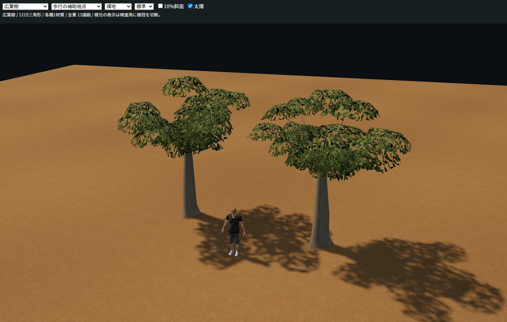
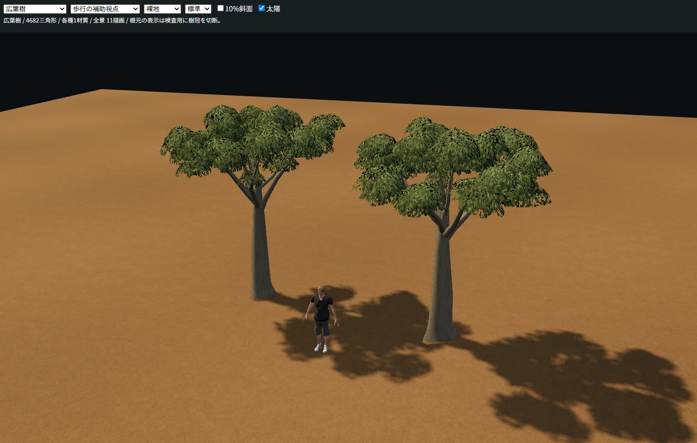
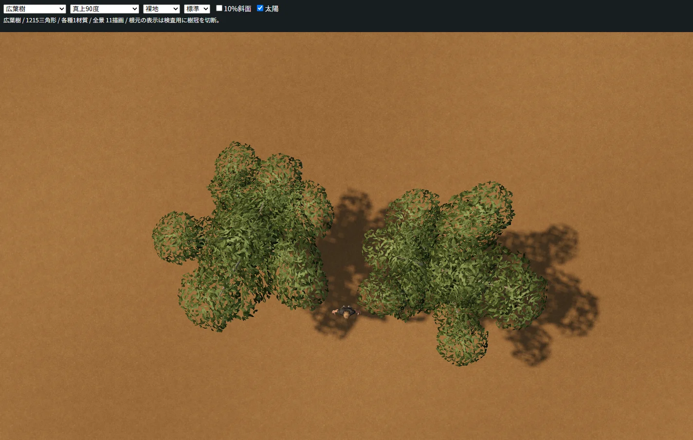
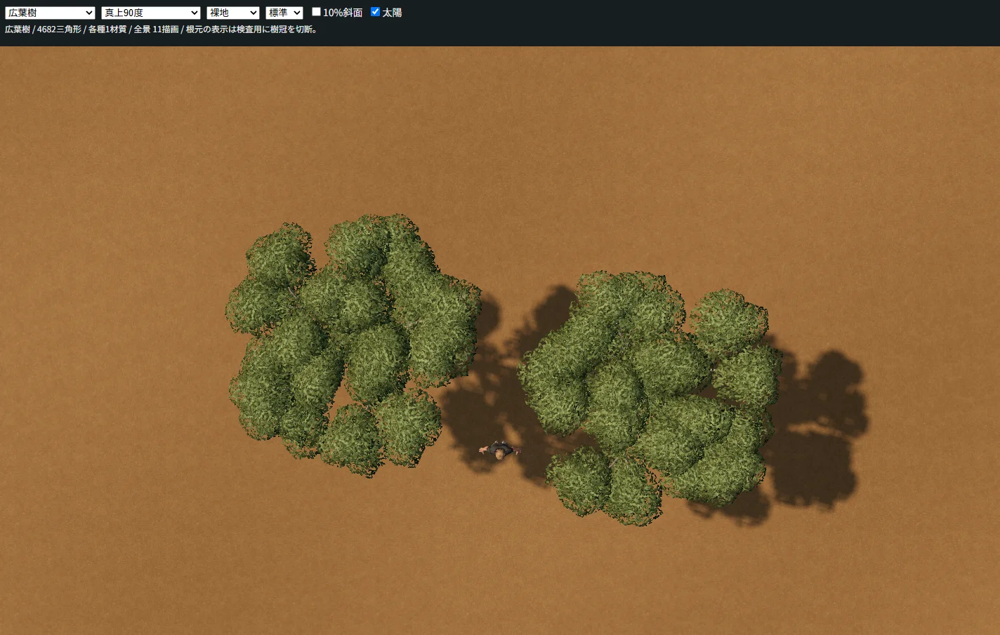
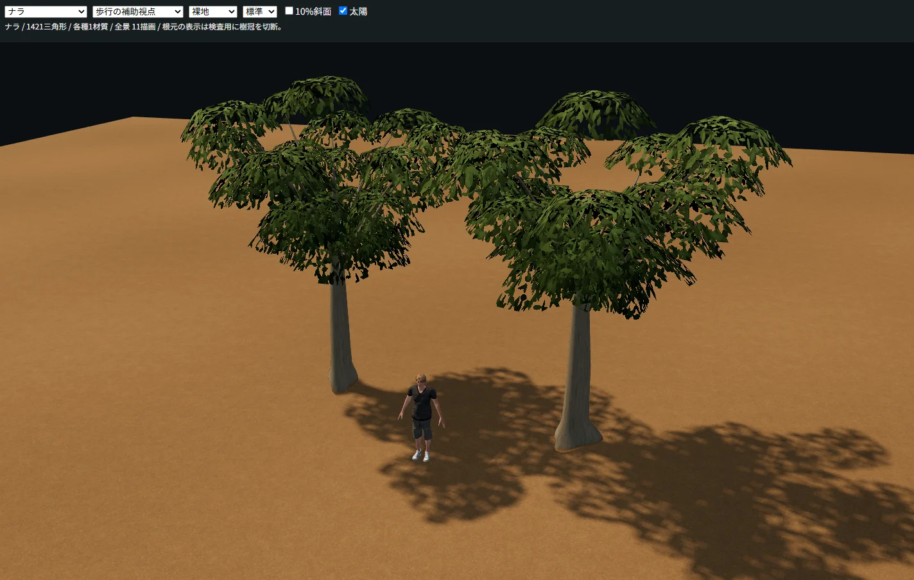
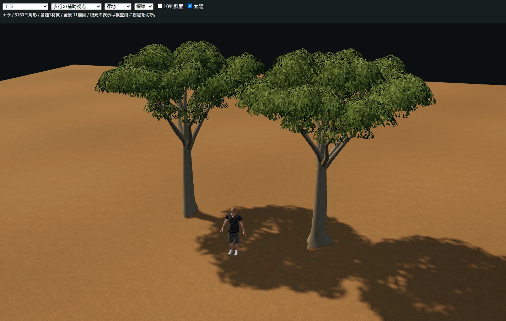
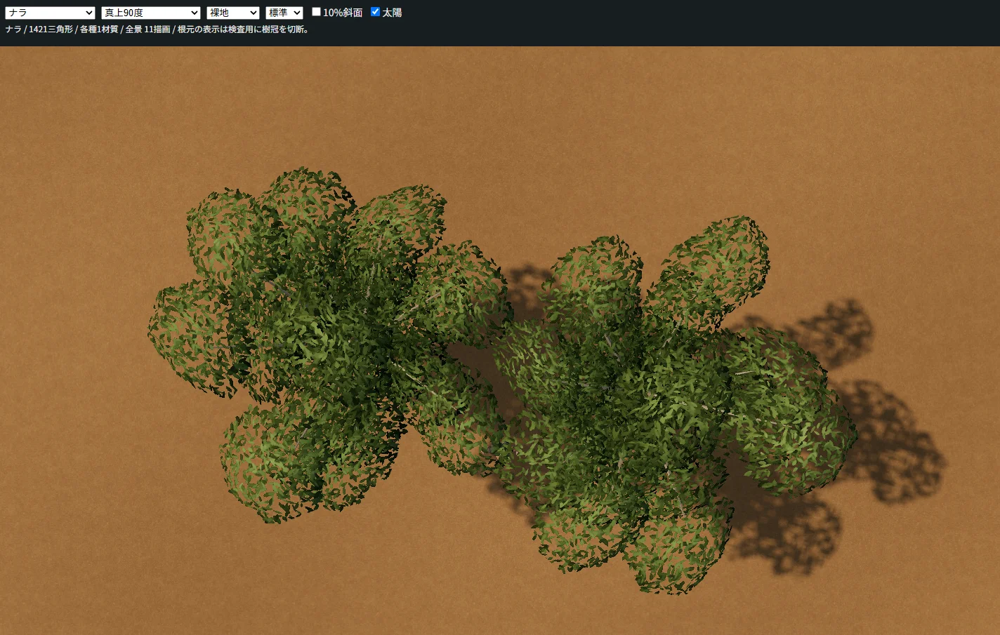
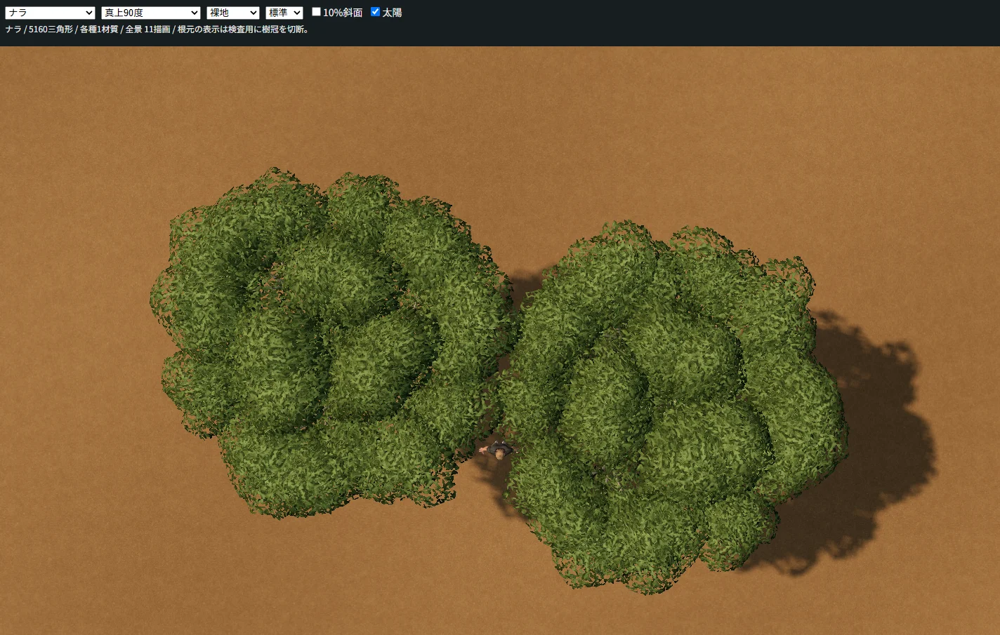
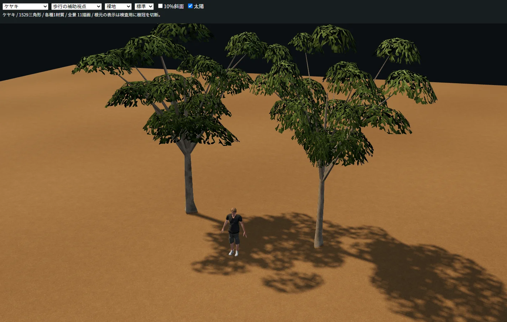
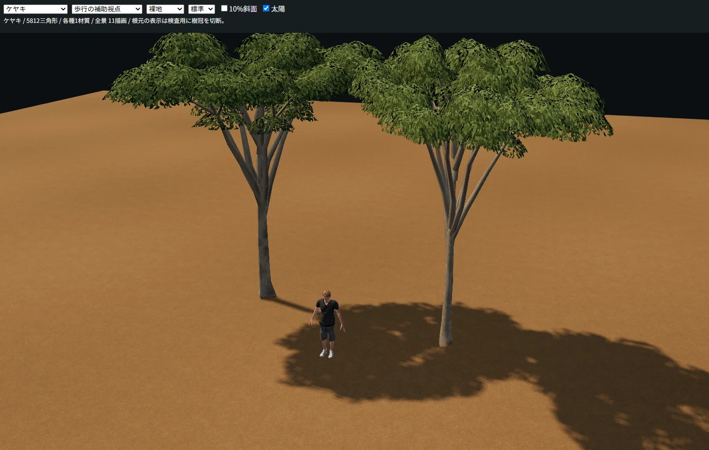
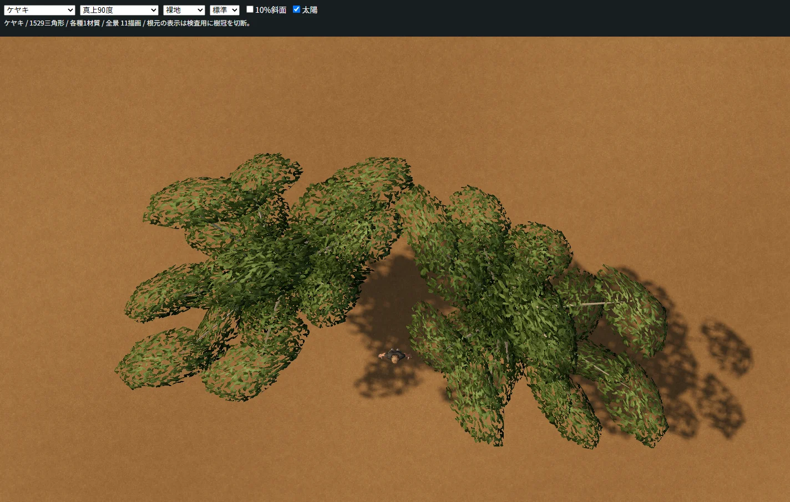
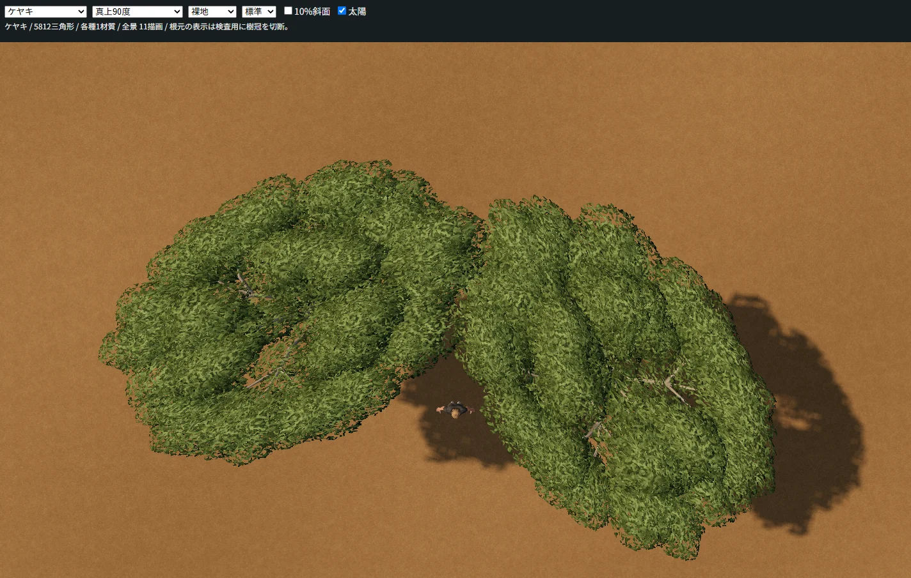
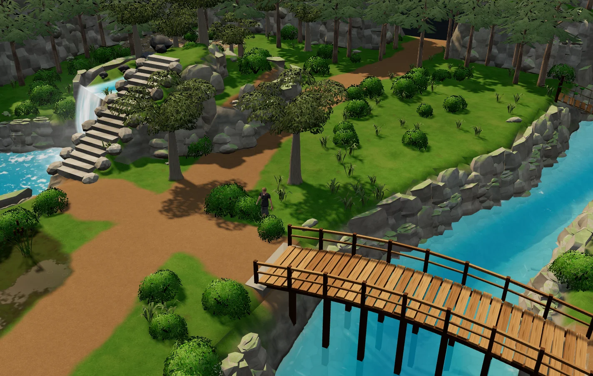
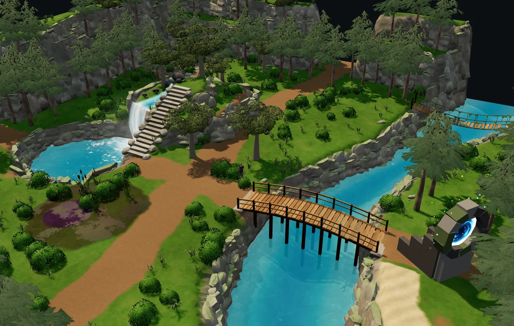
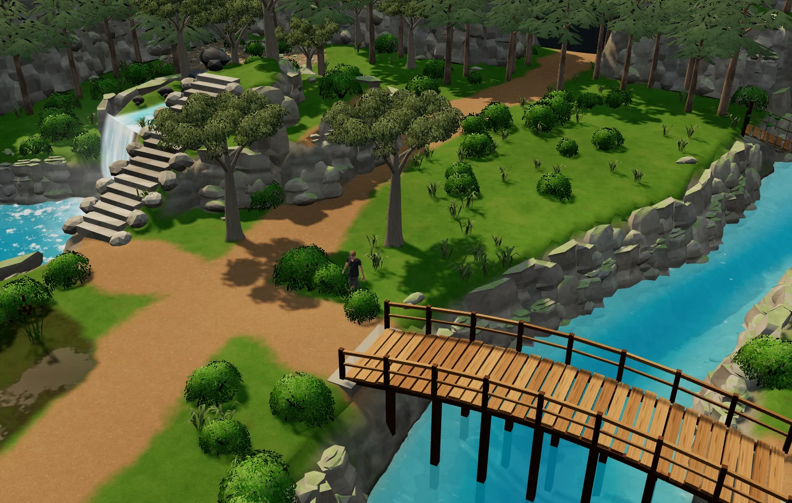
ユーザーPC上のChromeで撮影した実画面です。参照写真を素材へ転用していません。葉塊の曲面や模様の反復は残り、写実目標への改善途中です。スマホ実機性能は未測定です。